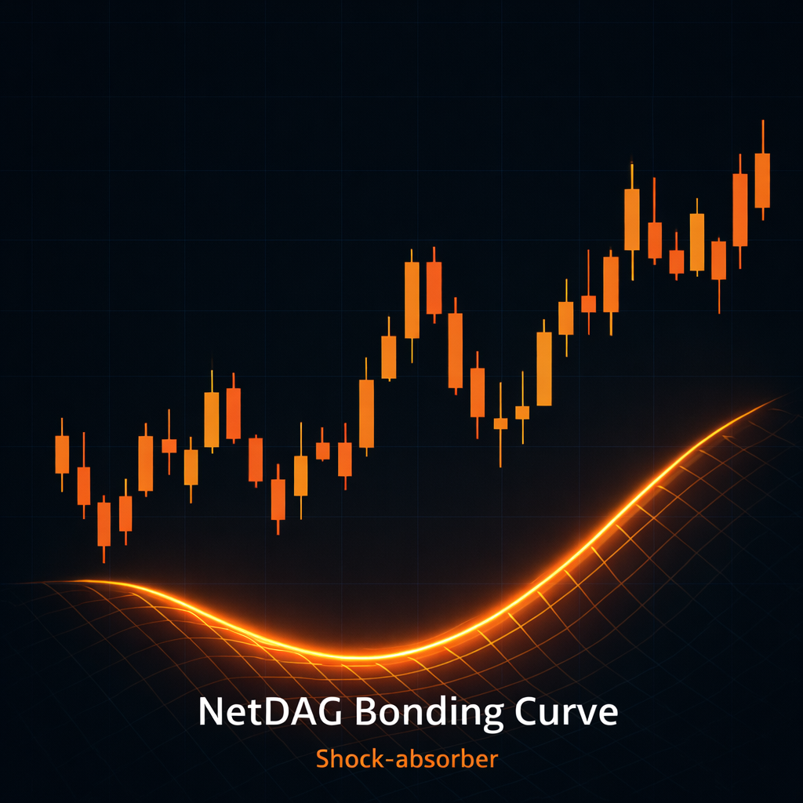
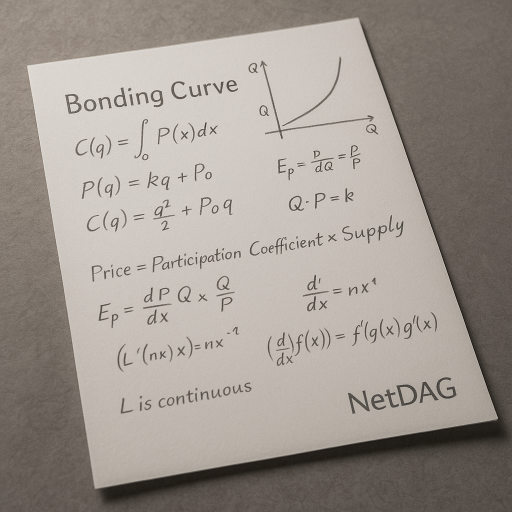
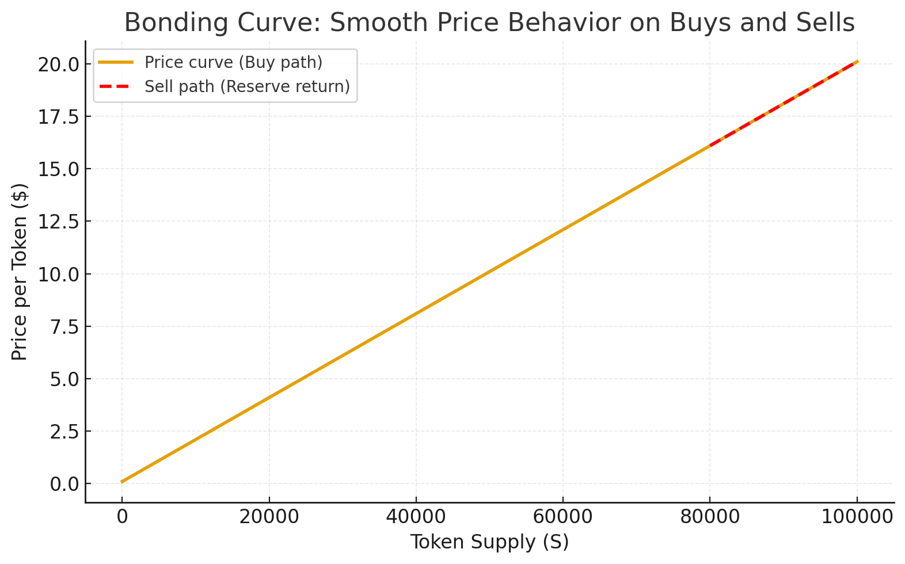

💧 Presale begins 00.00.2026 (00.00.2026).🔥 Early participants access the earliest stage of the NetDAG token distribution.🏦 22% protocol reserve mechanism supports ecosystem liquidity design.🎯 NetDAG is built around utility, resilience, and long-term ecosystem design.💧 Presale begins 00.00.2026 (00.00.2026).🔥 Early participants access the earliest stage of the NetDAG token distribution.🏦 22% protocol reserve mechanism supports ecosystem liquidity design.🎯 NetDAG is built around utility, resilience, and long-term ecosystem design.
Most crypto investors have experienced the nightmare: You buy at a high, a whale sells,
liquidity vanishes, and the price craters before you can exit. NetDAG's bonding curve
eliminates that risk.
🛡️
Protection From Dumps
Every sell moves down the curve gradually. Large holders can't crash the price in one transaction
because the bonding curve only allows small incremental price changes per trade.
💧
Always Liquid
You're never trapped. The smart contract itself is the market maker, guaranteeing you can
always sell at the current curve price — no waiting for buyers, no slippage nightmares.
📈
Predictable Growth
Every buy moves the price up mathematically. As adoption grows, so does your position — not
because of hype, but because the formula ensures it.
🏦
22% Buy-Back Reserve
Unlike other projects where reserves disappear, 22% of all platform revenue flows
into the buy-back reserve forever — continuously strengthening the price floor.
Bonding Curve vs. Traditional Markets
Here's how NetDAG's bonding curve compares to typical order-book DEXs and centralized exchanges:
Feature
Traditional DEX/CEX
NetDAG Bonding Curve
Price Discovery
Chaotic order matching, prone to manipulation
Mathematical formula — transparent and predictable
Liquidity
Depends on market makers; can dry up anytime
Always available via smart contract
Whale Protection
Large sells can crash price instantly
Gradual curve movement prevents panic crashes
Volatility
Extreme — driven by fear and FOMO
Smoothed by algorithmic pricing
Exit Risk
Can get stuck with no buyers
Guaranteed sell price on the curve
Reserve Backing
None — price can go to zero
22% revenue reserve builds permanent floor
The NDG Advantage:
Mathematically Guaranteed Growth & Unrivaled Stability
To our earliest investors, we present not just a token, but a mathematically reinforced
financial architecture engineered for sustained, long-term growth.
The foundation of the NDG economic system is our Bonding Curve — stabilized by an
unprecedented commitment: 22% of all platform revenue is permanently allocated
to a buy-back reserve. This reserve grows forever, strengthening liquidity
and stabilizing price behavior at every stage of adoption.
Every buy pushes the price up by design — not emotion — creating a mathematical staircase.
Liquidity is always available, panic crashes can't wipe you out,
and early buyers sit closest to the lowest possible price the token will ever have again.
It's not hype. It's not luck. It's programmable growth, where opportunity is determined
by timing and conviction — not market chaos. The curve doesn't guess.

NetDAG’s bonding curve acts like a built-in shock absorber: sells step down predictably, while the
reserve-backed curve helps hold structure.
The key is that price movement is not dictated by thin order books or panic-driven liquidity pulls.
Instead, the curve provides a continuous pricing path and the reserve provides an always-available
counterparty.
That combination helps prevent “air pockets” in liquidity — so even during heavy sells, price tends to move
in controlled steps rather than collapsing.
The Bonding Curve: Your Stability Engine
While most crypto projects depend entirely on volatile external markets,
NDG creates its own intrinsic value. Our token price P
is a deterministic function of the circulating supply S, represented by:
P = f(S)
This provides NDG with three structural advantages:
1. Guaranteed Liquidity
The 22% reserve acts as an always-available counterparty for sellers. Every holder is
assured a guaranteed sell price based on the current point on the
bonding curve — effectively eliminating the risk of liquidity failure or sudden collapse.
2. Predictable, Algorithmic Price Action
As platform revenue flows into the reserve, the curve ensures that price increases in a
mathematically controlled, non-manipulable manner. Early adopters are rewarded
algorithmically, every new buyer lifts the entire price floor, and each reserve infusion
raises long-term stability.
3. Rational, Transparent Market Mechanics
Here is a simple technical summary of how the curve behaves:
Curve Mechanism
Price Determinism
Resulting Stability
Buying (Minting)
Price increases as S increases
Rewards early adopters and consistently lifts the price floor
Selling (Burning)
Price decreases predictably along the curve
Eliminates liquidity risk; prevents panic drops
Real-World Scenarios: How The Curve Protects You
Scenario 1: A Whale Wants To Exit
Traditional DEX: They dump 10 million tokens at once. Price craters 60%.
Panic spreads. Small holders lose everything trying to escape.
NetDAG Bonding Curve: The whale's sell moves down the curve gradually.
Each token is sold at a slightly lower price than the last — but the price floor holds.
Other holders can exit calmly if they choose, or hold knowing the curve stabilizes.
Scenario 2: Market-Wide Crypto Crash
Traditional Token: Bitcoin drops 30%, and your token drops 70% because
liquidity providers panic and withdraw. You're stuck holding worthless tokens.
NetDAG Bonding Curve: External market conditions don't control NDG's price.
The bonding curve formula still applies, and the 22% buy-back reserve continues to strengthen
the floor. You can still sell at the curve price — always.
Scenario 3: You Need To Cash Out During Low Volume
Traditional DEX: Order book is thin. You place a market sell and get
30% less than the displayed price due to slippage. You lose thousands.
NetDAG Bonding Curve: Volume doesn't matter. The smart contract is the
buyer. You sell exactly at the curve price shown — no slippage, no waiting, no uncertainty.
The Mathematics Behind Stability
Here's the technical foundation that makes NetDAG's bonding curve work:

NetDAG Bonding Curve Formula
For clarity, consider a simple linear function:
P(S) = a·S + b
P(S) — price at total supply S
a — slope (how quickly price rises)
b — base price when supply is zero
Minting ΔS tokens (from S₁ to S₂) costs the area under the curve:
Cost(ΔS) = ∫S₁S₂ P(S) dS
This integral preserves backing in the contract reserve, giving NDG a built-in price floor.
The math guarantees that every token minted has corresponding value locked in the reserve.

Why NetDAG's Approach Is Different
The Benefits: A Market Governed by Math
Dump-Resistant: Big holders can't nuke the price in one move — each trade steps along
the curve.
Volatility-Smoothed: Predictable, formula-driven moves instead of fear and FOMO.
Self-Liquid: The contract is the market maker; there's always a counterparty
on-chain.
Transparent Pricing: Anyone can calculate the exact buy/sell price at any supply
level.
No Rug Pulls: Liquidity can't be withdrawn because it's locked in the bonding curve
smart contract.
The Future: Triple-Layer Innovation
NDG is pioneering a triple-layer innovation — a worldwide first — that establishes true decentralized
management:
Smart Contract Governance: Management rules are encoded directly into the smart
contract using Bonding Curve principles for transparent and immutable execution.
DAG Scalability: NDG merges its robust token economy with Directed Acyclic Graph
(DAG) technology, ensuring unparalleled transaction speed and scalability.
AI Monitoring (Guardian): An intelligent Guardian layer audits market behavior and
automatically adjusts key parameters within mathematically defined safe limits, proactively protecting
investor value.
Ready to enter at the lowest curve price?
Early presale participants lock in the best position on the bonding curve — before the price climbs.
DAG (Directed Acyclic Graph) lets transactions flow in parallel instead of waiting
in a single line. As more people join, the network stays fast and responsive instead of clogging up
when you need it most.
The bonding curve adds structure to that activity. Every buy and sell follows a
transparent price formula backed by a reserve, so price moves in smooth steps instead of violent
spikes and crashes.
Together, DAG and the Bonding Curve create a market that is built to stay usable and predictable:
high throughput for traders and builders, and pricing that reacts to real demand
instead of pure hype.